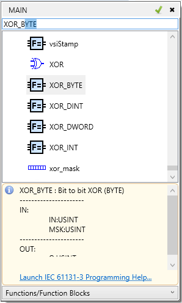

This applies to ST, LD and FBD programs.
When the “Select function” command is chosen from the context menu, a popup dialog appears, where the user can select from a list of available functions and function blocks. Type the name or symbol of the function/function block into the edit box and if it exists, it will be selected in the list. Pressing the Enter key or the small green check box will replace/insert the selected function in the editor with the selected one from the list box.
